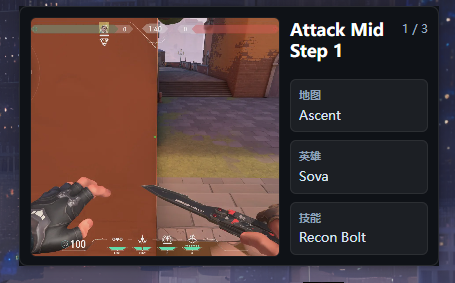
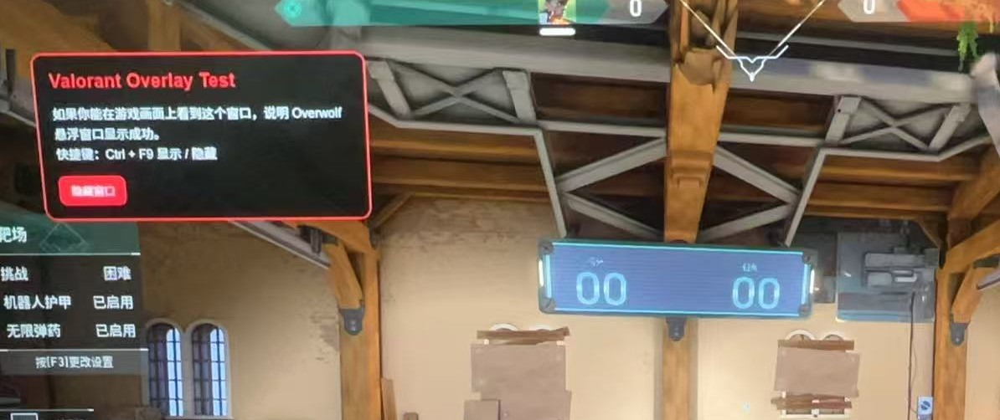

Manual Selection
Manual map and agent selection for deliberate browsing before or during practice.
Educational VALORANT lineup reference
An educational lineup guide and training reference tool for VALORANT players.
Product Overview
Valorant Lineup Assistant is an educational lineup guide and training reference tool for VALORANT players. It helps players manually browse and search static lineup tutorials by map, agent, side, ability type, and position.
Features
Manual map and agent selection for deliberate browsing before or during practice.
Static lineup image, GIF, and video tutorials for learning common utility placements.
Search and filters by map, agent, side, ability, and position.
Favorites and personal collections for content users want to review later.
A small user-triggered overlay for preparation or buy phase review. It can be closed at any time and does not provide live tactical instructions.
Future community-submitted lineup content with moderation before publication.
User Flow
Overlay Behavior
The in-game overlay is user-triggered only. It can be opened by a hotkey or button during preparation or buy phase review. It is designed to be small, movable, and easy to close at any time. It will not block the minimap, crosshair, ability bar, or other critical gameplay UI.

Compliance

Data Usage
The first version does not require access to player match history, ranked data, or personal Riot account data. If future features require Riot account data, Riot Sign On will be used and explicit player opt-in will be required.
Disclaimer
Valorant Lineup Assistant is an independent fan-made educational tool and is not endorsed by Riot Games. VALORANT and Riot Games are trademarks or registered trademarks of Riot Games, Inc.